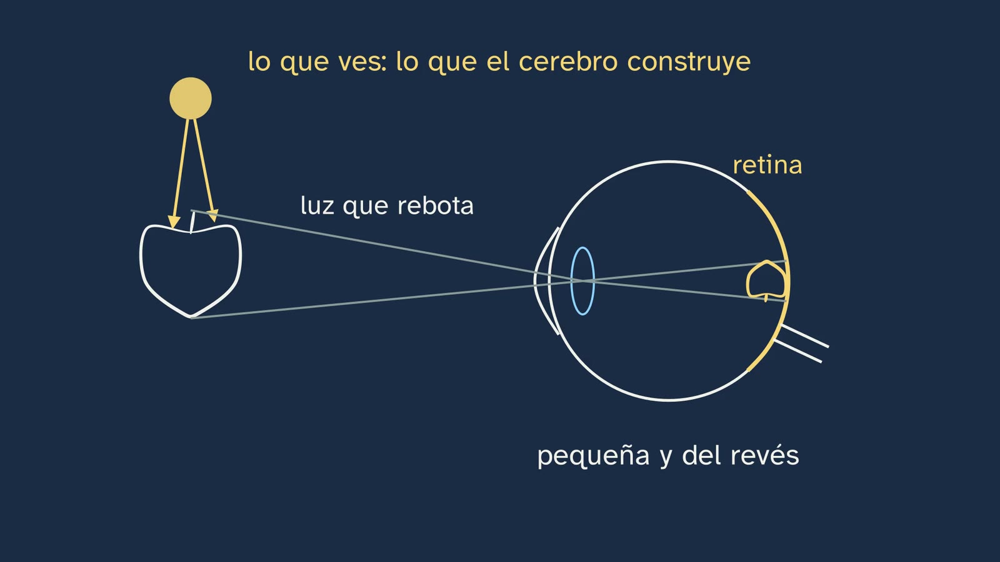
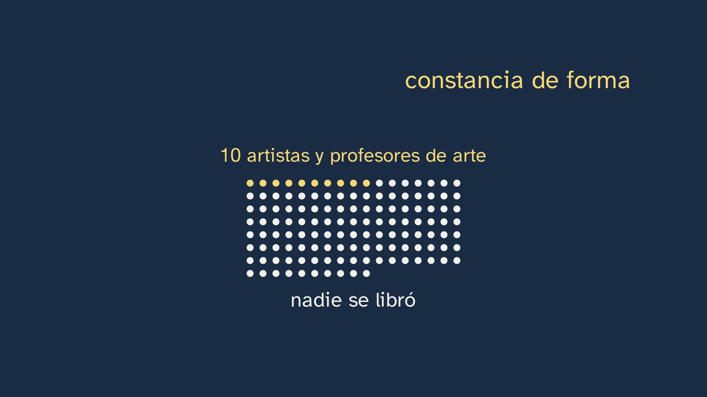

¿Por qué casi nadie dibuja lo que ve?
En pocas palabras
Es la primera clase de Dibujo Artístico del canal y abre el tema «Aprender a mirar». Su mensaje cabe en una línea: casi todo lo que falla al dibujar no está en la mano, sino en la mirada, porque el cerebro no nos da sólo la luz que llega al ojo, sino una reconstrucción mezclada con lo que sabe de las cosas. Y la mirada se entrena y se comprueba midiendo.
Antes de explicar nada, Marina propone un experimento: si quieres, pausa el vídeo y dibuja una cara de memoria, en diez segundos, dentro de un rectángulo. Ese dibujo se guarda: es la evaluación inicial del tema y vuelve dos veces, en esta clase y al final del tema 2. El gancho es una apuesta: en 2014, Claus-Christian Carbon y Benedikt Wirth, de la Universidad de Bamberg, publicaron cuatro estudios con 206 personas que dibujaron una cara, de memoria o copiándola. De memoria, de media, pusieron los ojos al 57 % de la altura de la cabeza, contando desde la barbilla; en una cabeza adulta están, de media, al 47,7 %. En una cabeza de 20 cm, casi 2 cm de diferencia. Al bajar la raya de los ojos aparece la frente que nos comemos: la explicación que mejor encaja con sus datos, y se dice como hipótesis, es que dibujamos la cabeza como una caja.
Después, por qué el cerebro pone tanto de su parte. Al ojo no le llega la manzana, sino la luz que rebota en ella, y forma en la retina una imagen pequeña y del revés. Esa imagen tiene un hueco, el punto ciego (Mariotte, 1668), que el alumno comprueba en la propia pantalla, y unas sombras, las de los vasos de la retina, que normalmente no vemos. ¿El cerebro pinta lo que falta o simplemente no lo echa de menos? Se deja como debate abierto, con sus dos posturas. La competencia 8 del decreto lo dice con una frase fuerte, «Lo que se percibe no es más que la reconstrucción que hace el cerebro de la información recibida»: la clase separa lo comprobado (el cerebro construye lo que ves) de lo que es filosofía (el «no es más que»).
El mecanismo del error es la constancia de forma. En 1931, el psicólogo Robert Thouless puso un círculo de cartón sobre una mesa: al ojo de su observador le llegaba una elipse de 36 de alto por cada 100 de ancho, y la dibujó de 58. La misma persona copió exacta una elipse plana vista de frente. Es un solo observador, así que es una demostración; lo sólido es que, de 129 personas, artistas incluidos, ninguna se libró. Por eso quien dibuja no se fía sólo del ojo: lo comprueba, midiendo. La clase enseña la primera medida: los estudios de cabezas reales sitúan los ojos entre el 47 y el 52 % de la altura; el alumno lo comprueba en su reflejo, con el lápiz apoyado en el espejo; y vuelve a su primer dibujo para colocar los ojos en tres pasos: la cabeza entera, la mitad, los ojos sobre esa raya.
Luego responde al título: ¿la mano o la mirada? El calco sale bien y la copia no, aunque la mano haga los mismos trazos; falla lo que decide la mirada (Cohen y Bennett, 1997, en un artículo que se titulaba casi como esta clase; y una revisión de 2016). Caen tres ideas muy extendidas: «dibujar es tener buena mano», «dibujar es cosa del cerebro derecho» (un neuromito como explicación) y «dibujar del revés te hace dibujar mejor» (dos estudios con más de cien personas cada uno: no mejora, y la distancia de los ojos a la boca sale peor). La última parte da la vuelta a la moneda: si mirar se aprende, dibujar es una escuela de mirar, y el currículo lo llama «forma de conocimiento»; dibujar también ayuda a recordar. Cierra el debate entre Ruskin (1857), que pedía recuperar «la inocencia del ojo», y Gombrich (1960), para quien el ojo inocente es un mito, cada uno con su mejor argumento. Queda como pregunta abierta.
Objetivo. Al terminar, el alumnado sabrá por qué al dibujar de memoria casi todos ponemos los ojos demasiado arriba, qué dice la investigación sobre por qué fallamos al dibujar (la mirada, no la mano), y colocar los ojos de una cabeza en su sitio midiendo.
Currículo
Real Decreto 243/2022, anexo II, Dibujo Artístico, materia obligatoria de 1.º de Bachillerato en la vía de Artes Plásticas, Imagen y Diseño. Citas comprobadas el 15/10/2026 en el texto consolidado del BOE (su última actualización, del 02/07/2026, no toca el anexo II) y, para las páginas, en el PDF original (BOE n.º 82, de 6 de abril de 2022), consultado el 16/10/2026.
| Elemento | Qué dice el decreto | Dónde se trabaja |
|---|---|---|
| Saber básico (bloque A, «Concepto e historia del dibujo») | «El dibujo como proceso interactivo de observación, reflexión, imaginación, representación y comunicación.» (p. 46127) | Toda la clase va de observar y reflexionar antes de representar. Lo dice explícitamente el capítulo «Dibujar es conocer lo que miras» (11:36–13:13) |
| Saber básico (bloque C, «Percepción y ordenación del espacio») | «Fundamentos de la percepción visual.» (p. 46128) | La luz y la retina y el punto ciego (3:06–5:19), y las constancias de forma y de tamaño (6:16–7:41). La Gestalt y las ilusiones ópticas, del mismo bloque, van al tema 5 |
| Competencia específica 1 | «Comprender el dibujo como forma de conocimiento, comunicación y expresión…» (p. 46122) | «Dibujar es conocer lo que miras»: para dibujar una cosa hay que mirarla de verdad (11:42) |
| Competencia específica 6, descripción | «El dibujo parte de la observación precisa y activa de la realidad, por lo que es fundamental entender cómo funciona la percepción visual de la que partimos, sus leyes y principios…» (p. 46124) | Es la razón de que la primera clase sea de percepción: lo que sabemos tuerce lo que vemos |
| Competencia específica 8, descripción | «Lo que se percibe no es más que la reconstrucción que hace el cerebro de la información recibida, y en esa reconstrucción interviene como factor fundamental la memoria visual…» (p. 46125) | Citada en pantalla y discutida (5:28–5:50): comprobado, que el cerebro construye lo que ves; filosofía, el «no es más que». La memoria visual, en la clase 5 |
| Criterio 1.1 | «Identificar el dibujo como forma de conocimiento, comunicación y expresión, reflexionando con iniciativa sobre su presencia en distintas manifestaciones culturales y artísticas…» (p. 46126) | El dibujo como forma de conocer y el debate de Ruskin y Gombrich (11:52–13:13); la pregunta abierta |
| Criterio 6.1 | «Emplear con intenciones comunicativas o expresivas los mecanismos de la percepción visual, sus leyes y principios…» (p. 46127) | Las constancias, como mecanismo que hay que conocer para no caer en él (el plato de Thouless), y la medida como forma de corregirlo |
Lo que no trabaja, a propósito. El saber «El boceto o esbozo. Introducción al encaje» (bloque B) y los criterios 8.1 y 8.2 son de las clases 2 a 5. La receta de los tres pasos para los ojos es un primer contacto con la medida, no un encaje: el encaje se aprende en la clase 2, «Medir con el lápiz».
Lo que hay que traer. De la ESO (Real Decreto 217/2022, Educación Plástica, Visual y Audiovisual, bloque B): «La percepción visual. Introducción a los principios perceptivos, elementos y factores.» y «La composición. Conceptos de equilibrio, proporción y ritmo aplicados a la organización de formas en el plano y en el espacio.» (BOE n.º 76, de 30 de marzo de 2022, p. 41646). La clase lo recupera con una pregunta, «¿vemos con los ojos o con el cerebro?» (2:51). Lo que no traen es la teoría de cómo ve el ojo, ni un método para medir. De Matemáticas de la ESO, el porcentaje y la proporción: el 47,7 % y el 57 % se convierten en centímetros sobre una cabeza de 20.
Las horas. En las siete comunidades contrastadas (Andalucía, Cataluña, Madrid, Comunitat Valenciana, Galicia, Castilla y León y País Vasco) son cuatro horas semanales en 1.º; en el País Vasco, tres como mínimo y cuatro de referencia. Es una materia de taller con mucho tiempo de práctica: el vídeo da la mirada, el método y la prueba, y el aula se queda para dibujar.
Los libros. No hay ningún libro de Dibujo Artístico I en edición LOMLOE (base del ISBN, consultada el 15/10/2026). El único a la venta es el de McGraw-Hill de 2006 (LOE), que abre con los materiales y sigue con la percepción. De 27 listas de libros de institutos revisadas, sólo dos lo piden. Sólo es contraste: nada de esta ficha sale de él.
Para Castilla y León. Su decreto pide una evaluación inicial antes de cada tarea: la cara de memoria del principio lo es, y por eso se guarda sin nota.
[!info] Nota para Cataluña y el País Vasco En estas dos comunidades la figura humana es de 2.º. Cataluña lo dice en la introducción de la materia: «A més el segon curs introdueix el dibuix de la figura humana» (Decret 171/2022, DOGC 8758, p. 100), y su criterio 4.2 de 1.º quita el cuerpo humano del criterio estatal (p. 103). El País Vasco hace lo mismo en su criterio 4.2 de 1.º (Decreto 76/2023, BOPV 109, p. 165). En esta clase la cara no se estudia como figura humana: es el ejemplo de un error de percepción y de la primera medida. El encaje de la cabeza, la mano y el cuerpo del tema 2 será para ellos un adelanto. Y un dato a favor en Cataluña: es el único currículo que liga la percepción a la neurología («de la neurologia», p. 109), que es justo lo que hace esta clase.
Cómo está construida la clase
Capítulos del vídeo
Unos quince minutos, en nueve capítulos. Es una clase de teoría, en la mesa de Marina, con mucho que hacer en casa: cada idea se comprueba con algo que el alumno puede repetir (su propio dibujo, la pantalla, un espejo, un plato, un calco). Sigue el modelo del departamento: mirar, medir y dibujar. Es la primera de las cinco clases del tema; la siguiente, «Medir con el lápiz», es ya de taller.
| Capítulo | Qué pasa | Por qué así |
|---|---|---|
| Qué vamos a ver | Marina se presenta. El mapa del tema, con sus cinco clases y el lápiz en las de taller, y los materiales: un par de lápices (uno normal y otro blando), una goma y unos folios (0:27). | El mapa, en todas las clases. Los materiales se dicen una vez, para todo el tema. |
| La cara que dibujas | El experimento, propuesto: «si quieres, pausa el vídeo y dibuja una cara, de memoria, dentro de un rectángulo», en unos diez segundos (0:39). Se guarda para el tema 2 (0:53). «No he visto tu dibujo, pero creo que sé dónde has puesto los ojos» (1:03). | Producir antes de ver: el alumno se convierte en un dato del experimento que viene. Es como empiezan Carbon y Wirth su artículo. |
| Los ojos, demasiado arriba | Carbon y Wirth, 2014: 206 personas en cuatro estudios (1:07). La apuesta: ¿por encima, en la mitad o por debajo? (1:29, pausa). Por encima: la regla de 20 cm, 9,5 cm en una cabeza real y 11,4 cm de memoria, casi 2 cm (1:40). Al bajar la raya aparece la frente (2:04). El error no desaparece del todo ni copiando; la hipótesis de la caja, como hipótesis: «No dibujamos la cabeza que vemos, sino la que creemos que es» (2:15). | El dato más fuerte del tema (un efecto enorme, que se repite con 106 personas), convertido en centímetros. La animación revela lo que el porcentaje esconde: nos comemos la frente. |
| Lo que llega al ojo | Recuperar de la ESO: ¿vemos con los ojos o con el cerebro? (2:51, pausa). La luz, la retina y la imagen del revés (3:06). El punto ciego y Mariotte (3:22). La prueba, si quieres, con el vídeo en pausa (3:56) y lo que se ve: ningún hueco (4:22). El debate, ¿lo rellena o lo ignora? (4:44). La cita del decreto, separada de lo comprobado (5:28). Para vivir, una maravilla; para dibujar, una trampa (5:49). | Es el porqué de fondo: hay un hueco y unas sombras que nunca vemos, así que el cerebro pone mucho. Cada afirmación se prueba con el propio ojo, y los dos sitios donde hay debate se dicen como debate (artículo 9). La última frase fija qué quiere decir «lo que ve» en el título. |
| Lo que sabes tuerce lo que ves | El plato: ¿tan aplastado o más redondo? (6:26, pausa). Thouless, 1931: 36 frente a 58 (6:36). La elipse plana, copiada exacta, y las 129 personas (6:54). La constancia de tamaño y «ni los artistas se libran: por eso se mide» (7:20). Marina, a mitad: «no dibujas lo que ves, dibujas lo que sabes. Y la mirada se puede entrenar» (7:41). | El mecanismo del error, con su control: la misma mano que redondea el plato copia bien la elipse. Lleva directo a la clase 2. |
| ¿Cómo lo sabemos? Mídelo tú | Los estudios de cabezas: del 47 al 52 % (7:54). La medida en el reflejo, con el lápiz apoyado en el espejo y nunca cerca del ojo (8:16). La vuelta al primer dibujo y los tres pasos (8:49). | La pregunta del canal. Tres pruebas que el alumno puede hacer, y el procedimiento que pide el objetivo: colocar los ojos midiendo. |
| ¿La mano o la mirada? | Calcar o copiar: ¿cuál te saldrá mejor? (9:33, pausa). El calco; los cuatro pasos de dibujar, y lo que falla es lo que decide la mirada (Cohen y Bennett, 1997; la revisión de 2016) (9:40). Tres ideas falsas: la buena mano (10:31), el cerebro derecho (10:38) y dibujar del revés (11:04). Lo que sí sabemos: se entrena (11:21). | Responde al título razonando con un experimento que el alumno puede hacer en casa. Los estudios pequeños no se usan como prueba (una regla del canal): Cohen y Bennett van sin cifras. |
| Dibujar es conocer lo que miras | Si mirar se aprende, dibujar es una escuela de mirar (11:38). El dibujo como forma de conocimiento (competencia 1); dibujar ayuda a recordar; ver viene dado, mirar se aprende (11:52). Ruskin y Gombrich, con su mejor argumento cada uno (12:24). | La otra cara de la clase, y la reflexión con fundamento que pide la materia. El debate se presenta entero y se deja abierto. |
| Para practicar | Tres ejercicios (13:13): el plato y su foto, el calco explicado y otra cara con los ojos en la mitad. La pregunta abierta (13:42). La próxima clase, el primer taller (14:02). Marina se despide (14:09). | Práctica que pone a prueba la idea del día con una medida. Las soluciones abren la clase 2. |
Puentes con otras materias. Biología, Geología y Ciencias Ambientales: el ojo, la retina y el nervio óptico. Matemáticas: porcentajes y proporciones (el 47,7 % de 20 cm), y la medida con el lápiz, que en la clase 2 es un problema de triángulos semejantes. Física y Química: la luz que rebota y la imagen invertida, como en una cámara. Filosofía: ¿vemos el mundo como es? El debate entre el realismo directo y la percepción como construcción, y el de Ruskin y Gombrich.

Plan de una sesión de 50 minutos
Pensado para verlo en clase con proyector, con folios y un lápiz sobre la mesa. Si el vídeo se ve en casa, como clase invertida, la sesión puede dedicarse entera a la actividad y a la «otra opción».
| Minutos | Qué se hace |
|---|---|
| 0–2 | Sin vídeo. Folios y lápices sobre la mesa. Nada más: no se dice de qué va la clase. |
| 2–8 | Vídeo desde el principio hasta «Lo que llega al ojo» (0:00–2:40). Parar en (0:51): cada cual dibuja su cara de memoria en diez segundos, dentro de un rectángulo, y la guarda boca abajo. Parar en (1:37), la apuesta: a mano alzada, por encima, en la mitad o por debajo. |
| 8–17 | Vídeo hasta la toma de Marina a mitad (2:40–7:49). Parar en (4:20), el punto ciego: quien quiera lo prueba (ver «Preguntas y soluciones»; con un proyector la distancia es grande, así que conviene la imagen de la pizarra impresa o el propio móvil). Parar en (6:32), el plato: a mano alzada. |
| 17–23 | Vídeo hasta el final de «¿Cómo lo sabemos? Mídelo tú» (7:49–9:17). Parar en (8:59): cada cual mide su primera cara con la tabla de la hoja (tres minutos). La medida en el espejo, para casa. |
| 23–29 | Vídeo hasta el final (9:17–14:17). Parar en (9:37), calcar o copiar: una razón por pareja. Los ejercicios, para casa. |
| 29–48 | La actividad: «La cara de memoria, medida entre todos». |
| 48–50 | La pregunta abierta, para el comentario del vídeo o para la clase siguiente. |
Errores típicos y cómo se tratan
Con la advertencia de siempre: ninguno está medido con alumnado español de Bachillerato. Son los que preveía la ficha del tema, los que señaló la revisión del guion y los que circulan en libros y en internet.
- «Dibujar bien es tener buena mano», o «se nace con talento o no». Si el calco sale bien y la copia no, la mano no es el problema principal. Cohen y Bennett (1997) lo resumen así: «motor coordination is a very minimal source of drawing inaccuracies» (resumen, p. 609). La revisión de Chamberlain y Wagemans (2016) pone en el centro percibir bien el modelo y el propio dibujo: «accurate perception of the subject and of the drawing is at the heart of drawing proficiency» (resumen). Lo que no conviene decir es lo contrario, «nadie nace sabiendo dibujar», porque la literatura cita a niños que dibujan como adultos sin clases (Chamberlain y otros, 2019, citando a Drake y Winner, 2012). La clase dice lo que se sostiene: «es una destreza que se entrena, como tocar un instrumento» (11:21). Y con honradez sobre cuánto: el único estudio que siguió a alumnos durante un curso (42 estudiantes de arte, cinco meses, sin grupo de control) vio una mejora pequeña, de 3,48 a 3,82 sobre 7 (Chamberlain y otros, 2019). La mejora se mide en meses y años.
- Los ojos, demasiado arriba. Es el hilo de la clase: de memoria, al 57 % (estudio 1, 41 personas) y al 56,5 % (estudio 3, 106 personas, caras de hombre y de mujer), frente al 47,7 % de la norma de Farkas (Carbon y Wirth, 2014, tablas 1 y 2). El efecto es enorme (d ≈ 1,3). Dos cuidados para no pasarse al otro lado. Uno: la mitad es una media y casi nadie la cumple exacta; en 200 adultos turcos, el canon exacto sólo lo cumplían el 8 % de las mujeres y el 4 % de los hombres (Karaca Saygili y otros, 2016, tabla 3). Dos: en los niños pequeños los ojos caen por debajo de la mitad, porque el cráneo crece antes que la cara (ver «Notas»). Y un error de medida: contar hasta lo alto del pelo. La clase lo avisa: «cuenta hasta donde estaría el cráneo, no el peinado» (8:44).
- «Dibujar es cosa del hemisferio derecho». Lo popularizó Drawing on the Right Side of the Brain, de Betty Edwards (1979). Como explicación es un neuromito. La OCDE lo incluye entre los neuromitos: «the hemispheres of the brain do not work separately but together for all cognitive tasks» (2007, cap. 6, p. 117), y un estudio de 1011 personas de 7 a 29 años no encontró personas «de cerebro izquierdo» ni «de cerebro derecho» (Nielsen y otros, 2013). La propia Edwards se cubre: en 2012 llama a sus modos «R-mode» y «L-mode» «to avoid the so-called location controversy». La clase dice que algunos de sus ejercicios pueden servir, «pero no por esa razón» (10:59). Ojo: que esos ejercicios mejoren el dibujo no está probado con ningún ensayo controlado; se dice «pueden servir», no «funcionan».
- «Copiar del revés te hace dibujar mejor». Es el ejercicio más famoso de ese libro. Con caras, no mejora nada. En Cohen y Earls (2010), con 121 estudiantes, la copia del revés salió algo peor en las relaciones espaciales (una diferencia pequeña, de unas 0,2 desviaciones típicas) y igual en lo demás. En Ostrofsky y otros (2016), con 126 estudiantes sin formación, empeoró la distancia vertical de los ojos a la boca, y las tres distancias cortas salieron igual. Sólo se ha probado con caras: no hay que generalizarlo a todo dibujo.
- «Los artistas ven la imagen de la retina» o «ven distinto». Ni los artistas se libran de las constancias. De las 129 personas de Thouless, entre ellas diez artistas y profesores de arte, ninguna se libró (Report of the British Association, 1932, pp. 469–470). En un estudio pequeño (37 personas), los artistas cayeron en las ilusiones de tamaño igual que los demás (Perdreau y Cavanagh, 2011). Que los artistas «regresen menos» hacia el objeto real se lee a veces, pero no está comprobado: la clase no lo dice, y esta ficha tampoco lo afirma. Lo que sí sostiene la revisión de 2016 es que dibujar bien no cambia de raíz la percepción («not to the extent that drawing skill elicits fundamental changes in visual perception»). Por eso la clase dice que quien dibuja mide.
- «El cerebro rellena el punto ciego», dicho como hecho cerrado. Lo establecido es que no vemos ningún hueco y que una línea que cruza el punto ciego se ve entera (Purves y otros, Neuroscience, recuadro «The Blind Spot»). Si el cerebro pinta lo que falta o simplemente no lo echa de menos se discute: Helmholtz propuso que quizá sólo se ignora («it may just be that this part of the visual world is ignored», en Purves); Dennett lo defiende hoy; Pessoa, Thompson y Noë (1998) sostienen que algunas formas de relleno no se pueden describir como «ignoring an absence». La pista fuerte del relleno son neuronas de la corteza visual que responden donde cae el punto ciego, registradas en monos (Komatsu, 2006). La clase lo deja como debate (4:44).
- «No vemos los objetos, sólo luz», o «el cerebro le da la vuelta a la imagen». Que al ojo le llega luz es física. Que «no vemos los objetos» es una tesis filosófica (el realismo directo lo niega). Y la idea de que el cerebro «da la vuelta» a una foto invertida, que traen algunos manuales, simplifica mal: el cerebro no gira ninguna imagen. La clase dice «del revés» y «lo que tu cerebro construye con ella» (3:11), sin más.
- Confundir los dos sentidos de «ver». Si lo que vemos es una construcción, ¿qué quiere decir «casi nadie dibuja lo que ve»? La clase lo fija (6:05): cuando decimos «lo que ves», hablamos de lo que de verdad llega al ojo, y eso es lo que casi nadie dibuja. Y al final añade otra distinción útil: ver viene dado, como respirar; mirar, con atención, se aprende, como leer (12:11).
- «Dibujar te hace ver mejor», sacado del efecto del dibujo. Lo que se midió es otra cosa: en siete experimentos con listas de palabras, se recordaba casi la mitad de las dibujadas y menos de un tercio de las escritas (Wammes, Meade y Fernandes, 2016). Prueba que dibujar ayuda a recordar, no que mejore la vista. La clase lo dice como «dibujar también ayuda a recordar» (11:58).
- Frases de Leonardo que no son de Leonardo. «Saper vedere» («saber ver») no está en su Trattato ni en los dos tomos de Richter: es el título de un libro de Matteo Marangoni (1933). Y «el ojo, ventana del alma» Leonardo lo recoge como dicho («che si dice finestra dell'anima», Trattato, ed. de 1890, §15, p. 10), no como frase suya. Si sale en clase, lo que sí escribió viene al caso: proponía juegos para entrenar «il giudizio dell'occhio, il quale è il principale atto della pittura» (§66, pp. 41–42; ver «Notas»).

Preguntas y soluciones
Para y piensa (dentro del vídeo)
- Dibuja una cara, de memoria, dentro de un rectángulo (0:39). No tiene solución: es el dato de partida. Conviene que se dibuje deprisa, sin borrar, y que nadie lo enseñe. Para medirlo después hace falta la cabeza entera, con su cráneo; si alguien dibujó sólo la cara, también vale: sabrá que la próxima vez tiene que empezar por el contorno.
- ¿Dónde crees que pusieron los ojos? ¿Por encima de la mitad de la cabeza, en la mitad, o por debajo? (1:29). Por encima (1:40). De memoria, al 57,0 % en el estudio 1 (41 personas que dibujaron el prototipo de una cara en un folio sobre la mesa) y al 56,5 y 56,4 % en el estudio 3 (106 personas que miraron dos caras medias durante 30 segundos y las dibujaron de memoria); copiando, al 53,8 y 53,6 % (estudio 4, 21 personas), frente al 48,8 y 47,3 % de las caras modelo (Carbon y Wirth, 2014, tablas 1 y 2; manuscrito aceptado). Quien apueste «en la mitad» tiene la regla de los libros, que es una buena media; la sorpresa es cuánto se aparta lo que dibujamos.
- ¿Vemos con los ojos o con el cerebro? (2:51). Con los dos (3:00). El ojo recibe la luz y forma la imagen; lo que vemos lo construye el cerebro con ella. Quien diga «con los ojos» tiene la idea de sentido común; quien diga «con el cerebro», la del decreto. La clase enseña por qué hacen falta los dos.
- El punto ciego, si quieres (3:56). Lo esperable: en algún momento el punto amarillo desaparece y se ven las rayas del fondo, sin hueco. Si no sale: comprobar que se tapa el ojo izquierdo y se mira la cruz con el derecho, sin apartar la vista, y moverse más despacio. La distancia a la que desaparece es, más o menos, la separación entre la cruz y el punto multiplicada por 3,6 (porque el punto ciego está a unos 15 grados del punto que miras): la cruz y el punto están al 40 % del ancho de la imagen, así que a pantalla completa son unos 6 cm en un móvil apaisado (desaparece a unos 20 cm), unos 12 cm en un portátil (unos 45 cm) y unos 24 cm en una pantalla de 27 pulgadas (unos 85 cm) (cálculos ejecutados). Con un proyector la separación es grande y habría que alejarse mucho: mejor el móvil o la imagen impresa (abajo). Con el ojo izquierdo se hace al revés: tapar el derecho, mirar el punto, y desaparece la cruz.
- Un plato redondo, sobre una mesa: ¿cómo lo dibujarías, tan aplastado como llega al ojo, o más redondo? (6:26). Más redondo (6:35). En Thouless (1931), el óvalo que llegaba al ojo medía 36 de alto por cada 100 de ancho y se dibujó de 58 (media de tres dibujos de un mismo observador, p. 341, tabla I): un 61 % más alto (0,58 / 0,36 = 1,61, cálculo ejecutado). Quien apueste «tan aplastado» confía en su mano; el ejercicio 1 le dejará comprobarlo.
- Calca una foto de una cara y después cópiala mirándola. ¿Cuál te saldrá mejor? (9:33). El calco (9:40). Por qué, en la solución de la pregunta 8 de la hoja.
- ¿Quién crees que tiene razón, Ruskin o Gombrich? (13:46). Es la pregunta abierta: criterios, al final de esta sección.

De la hoja del alumnado
Antes de empezar. No hay respuesta correcta: es su punto de partida, y es suyo. Lo que interesa es la segunda pregunta, al final: si su predicción («creo que he puesto los ojos en…») coincide con lo que midió. Una buena respuesta, inventada: «Creía que los había puesto en la mitad. Al medir, mi cabeza tenía 12 cm y los ojos estaban a 7 cm de la barbilla: el 58 %. Los subí casi como la gente del estudio. Y no dibujé frente: la cabeza era casi plana por arriba» (7 / 12 = 0,58, cálculo ejecutado).
Mide tu primera cara. La cuenta: altura de los ojos (de la barbilla al lagrimal) dividida entre la altura de la cabeza (de la barbilla a lo alto del cráneo), por cien. Si sale por encima de 52, sus ojos están más altos que en cualquier cabeza real de los estudios; si sale entre 47 y 52, están en su sitio. Se corrige el método (medir hasta el cráneo y no hasta el pelo, contar desde la barbilla, dividir bien), nunca el dibujo.
Mientras ves el vídeo.
- El estudio. Carbon y Wirth, en 2014, con 206 personas en cuatro estudios, unas de memoria y otras copiando (1:07). Midieron, sobre todo, a qué altura ponían los ojos, contando desde la barbilla y en proporción a la altura de la cabeza. De memoria, de media, al 57 %; en una cabeza adulta están, de media, al 47,7 % (las dos cifras, en la pizarra, 2:20; la voz lo dice en centímetros, 1:53). Nota: en el artículo también midieron el largo de la cara dibujada, que es lo que apoya la hipótesis de la caja.
- La cabeza de 20 cm. 0,477 × 20 = 9,54 cm, «unos nueve centímetros y medio»; 0,57 × 20 = 11,4 cm; la diferencia, 1,86 cm, casi dos (cálculos ejecutados). Al subir los ojos nos comemos la frente y el cráneo (2:09). La explicación que mejor encaja con los datos es que dibujamos la cabeza como una caja, plana por arriba, y olvidamos que el cráneo es redondo y alto; es una hipótesis, no una certeza (2:20). Carbon y Wirth barajaron otras dos (el pelo como un gorro y la cara vista desde abajo); sus datos, con caras dibujadas más cortas y menos frente, apoyan la de la caja. La mejor respuesta dice «hipótesis».
- La luz y la retina. Al ojo le llega la luz que rebota en la manzana; en la retina forma una imagen pequeña y del revés; lo que vemos es lo que el cerebro construye con ella (3:06).
- El punto ciego. Es el sitio por donde el nervio óptico sale del ojo, y ahí no hay células que capten la luz (3:29). No lo notamos porque no vemos ningún hueco: vemos el fondo; además, con los dos ojos abiertos, lo que uno no ve lo ve el otro, porque sus puntos ciegos no caen en el mismo sitio. La otra zona oscura son las sombras de los vasos sanguíneos de la retina, que pasan por delante de las células que captan la luz (4:34).
- El debate. ¿El cerebro pinta lo que falta o simplemente no lo echa de menos? «Lo ignora»: Helmholtz, en el siglo XIX, lo propuso como posibilidad, y hoy lo defiende el filósofo Daniel Dennett. «Lo rellena»: su pista fuerte son neuronas de la corteza visual, vistas en monos, que se encienden justo donde está el hueco (4:44–5:19). Se valora que dé las dos posturas con su razón y que diga que sigue abierto; no que elija una.
- La frase del decreto. Lo que vemos no es una foto del mundo, sino una construcción del cerebro (5:19). Comprobado: que el cerebro construye lo que ves. Filosofía: el «no es más que», porque hay quien piensa que, aun así, vemos el mundo directamente, tal como es (5:37).
- Thouless. Al ojo le llegaba un óvalo de 36 de alto por cada 100 de ancho, y su observador lo dibujó de 58 (6:43). Cuando la misma persona copió una elipse plana vista de frente, la copió exacta: de 0,45 a 0,45 (Thouless, 1931, p. 343). Así que el error no lo pone la mano, sino saber que el círculo es redondo: la constancia de forma (7:02). Las constancias sirven para vivir, porque gracias a ellas el mundo no cambia de forma cada vez que nos movemos (7:26); para dibujar son una trampa. Nota: es un solo observador, y por eso la clase lo llama demostración; lo que es prueba son las 129 personas.
- ¿Por qué un calco sale mejor que una copia? Porque para calcar la mano hace los mismos trazos que para copiar: si el calco sale bien, la mano sabe trazar las líneas. Lo que cambia al copiar son los otros tres pasos de dibujar: mirar el modelo, decidir qué línea poner y mirar tu dibujo. Lo que falla es lo que decide la mirada (9:43–10:07). La respuesta completa nombra los cuatro pasos. Nota: en 1997, Cohen y Bennett dedujeron la causa principal por descarte (fallar al ver el modelo) y escribieron que esa relación directa «has yet to be established»; la revisión de 2016 añade el propio dibujo, las decisiones de qué representar y la atención.
- Tres ideas falsas. «Dibujar es tener buena mano»: el calco lo desmiente. «Dibujar es cosa del cerebro derecho»: los dos lados del cerebro trabajan juntos, y un estudio con más de mil escáneres no encontró personas «de cerebro derecho» ni «de cerebro izquierdo» (10:38). «Dibujar del revés te hace dibujar mejor»: dos estudios con más de cien personas cada uno lo probaron con caras, y no mejora; la distancia de los ojos a la boca sale peor (11:04).
- Dibujar es conocer lo que miras. Para dibujar una cosa hay que mirarla de verdad: cuánto mide, hacia dónde se inclina, dónde le da la luz (11:42). Y dibujar ayuda a recordar: en siete experimentos con listas de palabras, se recordó casi la mitad de las dibujadas y menos de un tercio de las escritas (48 % y 31 %; Wammes, Meade y Fernandes, 2016). Ver viene dado, como respirar; mirar se aprende, como leer (12:11).
- Ruskin y Gombrich. Ruskin (1857): el pintor tiene que recuperar «la inocencia del ojo», ver manchas de color sin saber qué son; su prueba, que la hierba al sol es amarilla y casi nadie lo sabe, porque «creemos ver lo que sólo sabemos». Gombrich (1960): el ojo inocente es un mito, ver nunca es sólo registrar; y usa al mismo ciego de Ruskin, que al recuperar la vista no vería un cuadro, sino un caos que tiene que aprender a ordenar (12:24–13:13). Lo que le concede: el dibujo mejora cuando apartas lo que sabes.

¿Hecho, hipótesis o debate?
- H. Es lo que se midió: el 57,0 % en el estudio 1 y el 56,5 % en el 3 (Carbon y Wirth, 2014, tabla 2). La frase dice «de media» y «de memoria», y las dos cosas importan.
- E (explicación, hipótesis). Es la que mejor encaja con sus datos, pero los propios autores la presentan como una de tres posibles.
- H. Es anatomía: por ahí salen las fibras del nervio óptico, y en esa zona no hay fotorreceptores (Purves y otros, Neuroscience).
- D. Que no vemos un hueco es un hecho; si el cerebro «pinta» lo que falta o simplemente lo ignora se discute desde Helmholtz. La frase afirma una de las dos posturas.
- H. «Of 129 subjects (including ten artists and teachers of art) none were found who did not show phenomenal regression» (Thouless, Report of the British Association, 1932).
- H. Dos estudios con más de cien personas cada uno, con caras (Cohen y Earls, 2010; Ostrofsky y otros, 2016). Para nota: «con caras», porque con otros modelos no se ha probado.
- D, con una parte de H. Es la trampa de la hoja: que el cerebro construye lo que vemos está comprobado; el «no es más que» es una postura filosófica. Vale «H y D» si se separan las dos partes; la mejor respuesta lo hace.
- H. Siete experimentos, 291 personas en total, y réplicas de otro laboratorio (Huff y otros, 2024). Ojo: se midió con listas de palabras, en un laboratorio.

Para practicar (las soluciones abren la clase 2)
-
Dibuja un plato sobre la mesa desde tu silla. Hazle una foto desde el mismo sitio: ¿tu óvalo es más redondo que el de la foto? Lo esperable es que sí: el óvalo dibujado sale más alto, en proporción a su ancho, que el de la foto, porque sabemos que el plato es redondo y la constancia de forma lo redondea. La foto hace de «lo que llega al ojo», siempre que se haga con el móvil a la altura de los ojos y desde el mismo sitio. Cómo comprobarlo: medir en el dibujo y en la foto el alto y el ancho del óvalo (con una regla o con el lápiz) y dividir alto entre ancho. Un ejemplo inventado, con sus cuentas ejecutadas: dibujo, 6 cm de alto por 10 de ancho, 0,60; foto, 3,6 por 10, 0,36; el dibujo es un 67 % más alto en proporción (0,60 / 0,36 = 1,67), muy cerca de lo que encontró Thouless. ¿Y si a alguien le sale igual? Es posible, sobre todo si midió mientras dibujaba: es justo lo que la clase recomienda, y lo que enseña la clase 2. Criterios: dibujo y foto desde el mismo sitio; las dos proporciones medidas y comparadas; la explicación, con la constancia de forma; y, para nota, por qué la foto es una buena referencia (y su límite: el objetivo del móvil no está exactamente en el ojo).
-
Explica con tus palabras por qué un calco te sale mejor que una copia. Al calcar, la mano hace los mismos trazos que al copiar, pero no tiene que decidir nada: la línea está debajo del papel. Si el calco sale bien, la mano sabe trazar. Al copiar hay que mirar el modelo, decidir qué línea poner, trazarla y mirar el propio dibujo para corregirlo, y lo que falla es lo que decide la mirada. Un ejemplo de buena respuesta, inventado: «Cuando calco, mi mano sólo sigue la línea que ya está. Cuando copio, tengo que mirar la foto, decidir dónde va cada raya y comprobar si me ha salido bien. La mano es la misma; lo que me equivoca es lo que veo y lo que decido». Criterios: dice que la mano es la misma en los dos casos; nombra al menos dos de los otros pasos; no dice «porque no tengo buena mano» ni «porque no tengo talento».
-
Dibuja otra cara de memoria, ahora con los ojos en la mitad, y ponla al lado de la primera. Es personal: la solución es el método de los tres pasos. Uno, la cabeza entera, con su cráneo (la frente y lo alto de la cabeza, no un contorno plano por arriba). Dos, la mitad, marcada con una raya suave. Tres, los ojos sobre esa raya. Lo que se verá al compararlas: aparece la frente, la cabeza se alarga por arriba y la cara parece más de persona real. Criterios: la cabeza entera; la mitad, medida (con el lápiz o la regla, no a ojo); los ojos sobre ella; y, para nota, la cuenta del primer dibujo y la del segundo (por ejemplo, del 58 % al 50 %). Un cuidado: la mitad es una media, y una cara que quede al 48 o al 52 % también está bien.
Para seguir pensando. ¿Quién tiene razón, Ruskin o Gombrich? ¿Se puede dibujar lo que hay, sin lo que sabes, o todo dibujo es ya una interpretación? No tiene respuesta de libro, y ni el vídeo ni esta ficha dan la suya (artículo 9 de la Constitución del canal: el profesor modera sin dar su veredicto). Criterios para valorar las respuestas:
- La postura de Ruskin, con su mejor argumento. Lo que sabemos tapa lo que vemos: «we always suppose that we see what we only know», y por eso «Very few people have any idea that sunlighted grass is yellow» (The Elements of Drawing, 1857, nota al §5, pp. 6–7). Quien la defienda puede apoyarse en lo que ha visto en la clase: el plato de Thouless y los ojos altos son ejemplos medidos de lo que sabemos torciendo lo que vemos, y el ejercicio 1 lo pone a prueba en casa. Si apartar lo que sabemos mejora el dibujo, recuperar la «inocencia» es una buena meta para quien dibuja.
- La postura de Gombrich, con su mejor argumento. Ver es organizar: «The innocent eye is a myth» y «seeing is never just registering» (Art and Illusion, cap. IX, p. 298 en la edición de Princeton). Su argumento usa al ciego del propio Ruskin: quien recupera la vista no ve un cuadro de Turner o de Monet, sino «a smarting chaos which he has to learn to sort out in an arduous apprenticeship». Quien lo defienda puede apoyarse también en la clase: lo que vemos lo construye el cerebro, y ni los artistas se libran de las constancias (las 129 personas de Thouless).
- Lo que comparten. Gombrich concede en la misma página que las descripciones de Ruskin «do somehow correspond with the facts»: «Representation really does seem to advance through the suppression of conceptual knowledge», y a la vez, «no such suppression appears to be possible». Una respuesta que vea que los dos tienen parte de razón no está «sin decidirse»: ha leído bien el debate.
- Una tercera vía que puede salir. Hay quien sostiene que percibimos el mundo directamente, sin reconstrucción (Gibson, al que cita el propio Gombrich): es la postura que la clase nombra al hablar del «no es más que» (5:39). Vale como respuesta si se argumenta.
- Lo que se valora. Que dé el argumento de cada uno con sus palabras; que use un ejemplo propio (un dibujo, una foto, el plato); que distinga lo que se ha medido (las constancias) de lo que es interpretación; y, para nota, que relacione la pregunta con la competencia 3 del decreto, que pide del dibujo «una visión objetiva» de la realidad y, a la vez, «la expresión inmediata y directa de una visión subjetiva» (p. 46123). No se valora qué postura elige.

Una actividad para el aula
La cara de memoria, medida entre todos (unos 20 minutos, individual y en común; trabaja los saberes A y C, la competencia 6 y el criterio 6.1). Se puede hacer después del vídeo o, mejor aún, antes, si el grupo no lo ha visto: así el dato del grupo es limpio.
Material: folios, un lápiz y una regla por persona; papeletas iguales para todos; la pizarra del aula. Si se quiere comparar con un maestro, la cabeza de Durero de la National Gallery of Art impresa (enlace en «Recursos»).
- Dibujar (2 minutos). Si no lo han hecho con el vídeo: cada cual dibuja, de memoria, una cara de frente dentro de un rectángulo, con la cabeza entera, en unos diez segundos. Sin borrar y sin enseñarla.
- Medir (4 minutos). Con la regla, en su propio dibujo: la altura de la cabeza, de la barbilla a lo alto del cráneo (no del pelo), y la de los ojos, de la barbilla al lagrimal. La cuenta: ojos entre cabeza, por cien. La tabla de la hoja del alumnado sirve para apuntarlo.
- El dato del grupo (4 minutos). Cada cual escribe su porcentaje, redondeado, en una papeleta sin nombre; quien no quiera, la entrega en blanco. El profesor dibuja en la pizarra una recta del 40 al 70 % y pone un punto por papeleta. Después marca dos rayas: el 47,7 % (cabezas reales, de media) y el 57 % (lo que dibujó la gente de memoria en el estudio de Carbon y Wirth), y una franja del 47 al 52 % (lo que dan los estudios de cabezas de varias poblaciones).
- Comparar (4 minutos). En común: ¿cuántos puntos caen por encima del 52 %? ¿Dónde está el centro de la nube? ¿Se parece al estudio? Y la pregunta buena: ¿qué no se puede concluir? Una clase de veinte o treinta no es una muestra de nada; el estudio tenía 185 personas dibujando de memoria, en otro país, con otras instrucciones.
- Corregir (6 minutos). Una segunda cara, con los tres pasos de la clase: la cabeza entera, con su cráneo; la mitad, marcada; los ojos sobre esa raya. Se mide igual y se pone al lado de la primera. Quien quiera, mide también la cabeza de Durero.
Para el profesorado: lo que van a encontrar. Lo más probable es que la mayoría de los puntos caiga por encima de la mitad, y muchos por encima del 52 %: es lo que encontraron Carbon y Wirth, con un efecto muy grande y repetido en cuatro estudios. Pero un grupo pequeño puede salir distinto, y no pasa nada: si sale, es una buena ocasión para hablar de por qué un estudio necesita muchas personas. Lo que sí se verá casi siempre es la frente: en las caras con los ojos altos, la parte de arriba de la cabeza sale plana y corta, como una caja. En la segunda cara, los ojos bajan, aparece la frente, y la cara se parece más a una persona. Si alguien mide la cabeza de Durero, la encontrará muy cerca de la mitad. Dos avisos al corregir: quien cuente hasta lo alto del pelo obtendrá un porcentaje más bajo de lo que es (el pelo engaña), y quien haya dibujado sólo la cara, sin cráneo, no puede hacer la cuenta: su dato es otro, que se le olvidó la cabeza. Criterios: mide desde la barbilla y hasta el cráneo; hace bien la cuenta; en la segunda cara sigue los tres pasos; y explica con la clase por qué la primera salió así.
Seguridad y datos personales. Los dibujos son de cada cual: nadie enseña el suyo, las papeletas son anónimas y se destruyen al acabar, y la primera cara no lleva nota, porque es la evaluación inicial del tema. Las medidas se hacen siempre sobre el papel. Nadie mide la cara de otra persona con el lápiz, ni la propia con el lápiz cerca del ojo: quien quiera medirse, lo hace en casa sobre su reflejo, con el lápiz apoyado en el espejo, como dice el vídeo.
Otra opción: el plato de Thouless, con fotos (unos 15 minutos, en parejas; prepara el ejercicio 1).
- Montar (2 minutos). Un plato (o un círculo de cartulina) sobre la mesa, y cada cual sentado en su silla, sin moverse.
- Dibujar sin medir (3 minutos). El óvalo del plato, tal como lo ve, sin medir con el lápiz.
- Fotografiar (2 minutos). Con el móvil a la altura de los ojos y desde el mismo sitio, una foto del plato.
- Medir y comparar (5 minutos). En el dibujo y en la foto (en la pantalla o impresa), el alto y el ancho del óvalo, y la cuenta: alto entre ancho. ¿Cuál sale más redondo?
- En común (3 minutos). Cuántas parejas dibujaron el óvalo más redondo que la foto, sin nombres. Y la pregunta de la clase: si redondeamos lo que sabemos que es redondo, ¿qué hay que hacer para no caer? Medir.
Para el profesorado. Lo esperable es que casi todos los dibujos salgan más redondos que la foto, como en Thouless (de 0,36 a 0,58 en su observador). Cuanto más baja la mirada respecto a la mesa, más aplastado llega el óvalo y más se nota. No se puede usar como estadística (es un aula), pero sí como experimento propio, con su control: si alguien copia la foto del óvalo, de frente, debería copiarlo casi exacto, como la elipse plana de Thouless. Si la actividad, o una variante, os funciona, contadlo en el Ágora, en el hilo de esta clase.

Recursos abiertos: obras, demostraciones y herramientas
Lo que la clase enseña se puede seguir trabajando con colecciones de museo, demostraciones y programas gratuitos. Todos los enlaces, abiertos y comprobados el 16/10/2026.
| Recurso | Qué cubre | Cómo usarlo en clase |
|---|---|---|
| Alberto Durero, Retrato de un hombre, probablemente 1510, punta de plata (National Gallery of Art, Washington, 1943.3.3699) | La cabeza del vídeo, casi de frente y con el cráneo entero a la vista. La página dice «This object's media is free and in the public domain» y tiene botón de descarga en alta resolución. Ojo con la fecha: la inscripción «1503» es falsa, según el propio museo («falsely signed & dated») | La mejor para medir: imprimirla y que cada cual compruebe dónde caen los ojos. Sirve para la actividad y para la clase 2 |
| Imágenes libres de la National Gallery of Art y sus datos abiertos | Las obras en dominio público del museo, con descarga gratuita, y los datos de la colección en CSV | Para buscar más cabezas dibujadas: Watteau, Three Studies of a Woman's Head (1963.15.34.a), o Greuze, A Young Girl Looking Upward (1987.48.1), con la cabeza girada o echada hacia atrás, para buscar la mitad cuando la cabeza no está recta |
| Open Access del Met | El programa del museo: las imágenes de obras en dominio público, libres para cualquier uso (CC0) | Para buscar dibujos de maestros con el filtro «Open Access» |
| Open Access del Cleveland Museum of Art | Imágenes y datos con licencia CC0, con botón de descarga en cada obra libre | Tres dibujos para comparar dónde caen los ojos: la cabeza de niño de Rafael (hacia 1507–1508), el Emil Gauguin as a Child de Paul Gauguin (hacia 1875–1876) y la Head of an Old Woman de Hans Holbein el Viejo (hacia 1500), las tres CC0. En las dos de niño, a ojo, los ojos quedan por debajo de la mitad |
| Rijksmuseum: Studies van ogen, grabado anónimo según Jusepe de Ribera, y Studies van gezichten, ogen en oren, de Paulus Pontius según Rubens | Láminas de cartilla de dibujo del siglo XVII, con ojos sueltos y, en la de Rubens, cabezas de niño y de adulto en la misma hoja. Dominio público, según el museo | Para el tema 2, y aquí para comparar en una sola hoja dónde caen los ojos en un niño y en un adulto |
| Michael Bach, Visual Phenomena & Optical Illusions: «Blind Spot» (Universidad de Friburgo) | Otra forma de encontrar el punto ciego, con los dedos a brazo estirado. En inglés, gratis, sin registro | Para quien quiera repetir la prueba de la clase. Con los brazos estirados, tampoco acerca nada al ojo |
| Purves y otros, Neuroscience, recuadro «The Blind Spot» (NCBI Bookshelf) | El manual de referencia: el punto ciego y su relleno, con la idea de Helmholtz, y las sombras de los vasos. En inglés, de lectura libre; © de la editorial | Para el profesorado que quiera la fuente de cada afirmación del capítulo «Lo que llega al ojo» |
| OpenStax, Psychology 2e, §5.3, «Vision» | El ojo, la retina, el punto ciego y por qué no lo notamos, para estudiantes. En inglés, gratis; licencia CC BY-NC-SA 4.0 (en el aula, sin fines comerciales y citando) | Una lectura breve para quien quiera ampliar, o para un trabajo con Biología |
| John Ruskin, The Elements of Drawing (1857): Project Gutenberg y la edición de 1857 en Internet Archive | El libro entero, de dominio público. La «inocencia del ojo» y la hierba amarilla están en la nota al §5 (pp. 6–7) | Para leer la cita en su sitio antes del debate, y para ver que el libro es, sobre todo, un curso de dibujo con ejercicios |
| Los artículos de la clase, en abierto: Cohen y Bennett (1997) y Cohen y Earls (2010), en la web de su autor; Carbon y Wirth (2014), manuscrito aceptado en la Universidad de Bamberg; Wammes, Meade y Fernandes (2016), en la Universidad de Waterloo; Nielsen y otros (2013), PLoS ONE, CC BY | Los datos de la clase en su fuente. En inglés. Salvo Nielsen, con derechos reservados: se enlazan y se citan, no se copian sus figuras | Para un trabajo de «¿cómo lo sabemos?»: leer el resumen de uno y explicar qué midieron y con cuántas personas |
| OCDE (2007), Understanding the Brain: The Birth of a Learning Science | El capítulo 6, «Dispelling "neuromyths"», con el del cerebro izquierdo y derecho (p. 117). En inglés, gratis; © OCDE | Para el error 3, y para hablar de neuromitos con otras materias |
| GIMP | Editor de imágenes libre y gratuito, con capas y opacidad | Para poner el propio dibujo encima de una foto del modelo, a la misma escala y semitransparente, y ver dónde se aparta: lo que el tema llama la comprobación a la vista |
| ImageJ | Programa del NIH para medir sobre imágenes; dominio público («not subject to copyright protection and is in the public domain») | Para medir con precisión, en una foto o en un escaneo, la altura de los ojos y de la cabeza (y el alto y el ancho del plato del ejercicio 1) |
| Krita | Programa de dibujo libre, gratuito y de código abierto | Para quien dibuje en tableta: los mismos ejercicios, con una capa para las rayas de medida |
Notas para el profesorado
Lo que la clase no dice en voz, porque no responde a su pregunta, pero un profesor querrá saber.
- Seguridad: el lápiz, siempre sobre el espejo. La clase propone medirse la cabeza con un lápiz, y lo propone así: «si quieres», sobre el reflejo, «con el lápiz apoyado en el cristal y nunca cerca del ojo» (8:18). Llevar la punta de un lápiz al lagrimal de la propia cara, o de la de otra persona, es un riesgo real para el ojo; en el reflejo la proporción es la misma, porque la imagen del espejo conserva las proporciones de la cara. En el aula, nadie mide la cara de un compañero con el lápiz: se mide sobre el papel, sobre una foto o sobre el espejo. Lo demás que propone el vídeo es sin riesgo y voluntario (taparse un ojo para el punto ciego, mirarse en un espejo, calcar, dibujar un plato), y quien no quiera o no pueda lo piensa o lo hace con la imagen. Quien vea sólo por un ojo, o tenga un ojo vago, puede no encontrar el punto ciego en la prueba de la pantalla: no pasa nada, y la explicación de la clase le vale igual.
- Los dibujos son de cada cual. Son menores: nadie sube su dibujo a ningún sitio, ni a los comentarios del vídeo ni al Ágora, y la primera cara no se califica. Lo que se evalúa es el método (medir bien, explicar con la clase), no el dibujo.
- Carbon y Wirth, con sus detalles. Medían la distancia del lagrimal (endocantion) a la barbilla (gnatión), dividida entre la del vértice del cráneo a la barbilla, y la comparaban con la norma craneométrica de Farkas, 0,477 (Farkas, 1994). Los cuatro estudios: 41 personas que dibujaron «el prototipo de una cara» en un folio sobre la mesa; 38, con el papel en la pared; 106, que miraron dos caras medias 30 segundos y las dibujaron de memoria; y 21, que las copiaron. Un quinto estudio miró tres figuras de caras de artículos de investigadores famosos, también con los ojos altos (0,539): como anécdota, «les pasa hasta a los expertos en caras», no como prueba. El título del artículo («Neanderthal paintings?») es una broma de los autores, porque las caras dibujadas, sin frente, se parecen a un neandertal: no es una hipótesis. Las cifras están cotejadas en el manuscrito aceptado de Bamberg, no en la página maquetada de Perception.
- La mitad, con su margen. Medidos desde la barbilla, los ojos caen entre el 47 % y el 52 % según la población y la medida: el 47,7 % de la norma de Farkas y el 47,3–48,8 % de las caras modelo de Carbon y Wirth; el 50,6 % (mujeres) y el 50,8 % (hombres) en 200 adultos turcos de 20 a 35 años (Karaca Saygili y otros, 2016); y alrededor del 51–52 % en una estimación aproximada con las medidas del ejército de Estados Unidos (ANSUR II, que usa la comisura externa del ojo). En una cabeza de 20 cm, de 9,4 a 10,4 cm: medio centímetro arriba o abajo de la mitad (cálculos ejecutados). El 57 % de memoria queda fuera de cualquiera de ellas. Por eso la clase dice «casi en la mitad: un poco por debajo, o un poco por encima» (8:02).
- En los niños, más abajo. En un niño pequeño los ojos caen por debajo de la mitad, porque el cráneo crece pronto y la cara después. Con las tablas de Snyder y otros (1977), la raíz de la nariz queda, contando desde lo alto de la cabeza, al 53 % a los 2–3 años, al 52 % a los 6 y al 47 % a los 16 (cálculo propio; la raíz de la nariz está unos milímetros más arriba que el lagrimal). A los 5 años, el cráneo por encima de la nariz ya mide el 89 % del de un adulto (Farkas, en Posnick, 2000). Por eso un niño dibujado con los ojos a la mitad parece mayor. Las cabezas de niño de Rafael y de Gauguin, en Cleveland, lo enseñan a ojo. Es materia del tema 2.
- El calco y la copia, con su cifra. El experimento de Cohen y Bennett (1997) dio, en una escala de 1 (muy fiel) a 10 (muy malo), 3,38 al calco y 8,12 a la copia mirando la foto (tabla 1, p. 614). Pero eran 12 dibujantes, cuatro por condición: la clase no da la cifra y propone el experimento en casa (regla del canal: un estudio pequeño no es prueba). Y dos matices de ese artículo: pusieron a prueba tres de sus cuatro causas y dedujeron la cuarta, ver mal el modelo, por descarte; y no encontraron que nos engañemos al mirar nuestro propio dibujo, algo que la revisión de 2016 corrige. En la pantalla del vídeo, la cadena enciende en naranja tres eslabones (mirar el modelo, decidir y mirar tu dibujo): eso es lo que dice la revisión de 2016, no lo que encontraron Cohen y Bennett en 1997.
- Edwards, con sus fechas. Drawing on the Right Side of the Brain salió en 1979 y se revisó tres veces, la última en 2012. Sus cinco habilidades (ver bordes, espacios, relaciones, luces y sombras, y el todo) no estaban formuladas en 1979: Edwards cuenta que se le ocurrieron unos seis meses después, y aparecen en la edición de 1989. Se pueden nombrar; sus ejercicios e imágenes tienen derechos y no se reproducen.
- El neuromito, también entre docentes. En una encuesta a 242 profesores británicos y neerlandeses interesados en el cerebro, el 91 % y el 86 % daban por buena la idea de que el predominio de un hemisferio explica cómo aprende cada alumno (Dekker y otros, 2012). No vale como cifra de «todos los profesores», pero sí para ver lo extendido que está.
- Mariotte, con su anécdota. Describió el punto ciego en 1668, en una carta a Jean Pecquet publicada en las Philosophical Transactions: puso dos papelitos en una pared y, mirando uno con el ojo derecho, el otro desaparecía a unos diez pies. Lo enseñó a los sabios de la Academia en la biblioteca del rey, en París, pero el año exacto de esa demostración no lo hemos podido confirmar. Y sacó una conclusión equivocada: que se ve con la coroides y no con la retina, lo que le metió en una polémica que duró hasta su muerte. El dato era bueno; la explicación, mala. Las versiones que circulan, en las que «asombró a la corte» o divirtió al rey con cortesanos «sin cabeza», no aparecen en ninguna fuente fiable.
- El punto ciego, con números. Está a unos 15 grados del punto que miras, hacia la oreja (entre 13 y 18 según la persona), y mide de 5 a 8 grados: unas cuatro uñas de pulgar a brazo estirado (Purves; Rohrschneider, 2004; cálculo propio). Las sombras de los vasos de la retina se pueden llegar a ver moviendo una luz junto al ojo (lo observó Purkinje); por eso la clase dice «normalmente tampoco los ves», y por eso no se propone como experimento: se hace con una linterna contra el párpado.
- Las otras constancias. La clase da la de forma y la de tamaño. Hay dos más, muy útiles para quien dibuja: la de luminosidad (una hoja blanca sigue pareciendo blanca a la sombra, aunque devuelva menos luz que la tinta negra al sol; Purves) y la de color (una manzana roja se ve roja con buena y con mala luz; APA). Se notan cuando se pinta la sombra de algo blanco: a veces hace falta un gris más oscuro de lo que uno cree.
- Dibujar ayuda a recordar, con su letra pequeña. Wammes, Meade y Fernandes (2016) hicieron siete experimentos con 291 universitarios de Waterloo en total, de 25 a 49 por experimento: de media, se recordó el 48 % de las palabras dibujadas y el 31 % de las escritas. Otro laboratorio lo ha repetido (Huff y otros, 2024), con un matiz: el efecto es mayor cuando en la misma lista se mezclan palabras dibujadas y escritas. Los autores creen que funciona porque dibujar junta el significado, la imagen y el movimiento de la mano; es su explicación, no un hecho.
- Gombrich, con su página. Las citas están en el capítulo IX de Art and Illusion, p. 298 de la edición de Princeton (serie Bollingen). La paginación de la primera edición de 1960 no la hemos podido ver: si se cita la página junto al año 1960, conviene decir «p. 298 en la edición de Princeton». Y la concesión a Ruskin, con sus palabras: Gombrich escribe que apartar del todo lo que sabemos «no parece posible» («no such suppression appears to be possible»), y la clase lo dice igual: «Lo difícil es que no parece posible apartarlo del todo» (13:09).
- Leonardo, para el aula. En el Trattato della pittura (§66, «De' giuochi che debbono fare i disegnatori») propone un juego a los dibujantes: uno traza una línea en un muro y los demás, a unos metros, cortan una paja del largo que creen que tiene; gana quien más se acerca. Esos juegos, escribe, sirven para tener buen ojo, «il quale è il principale atto della pittura». Se puede jugar con un hilo o una tira de papel: es un buen calentamiento para la clase 2.
- Por qué se dice «de memoria» y «de media». Un alumno atento preguntará si todos subieron los ojos. El artículo da medias y desviaciones, no cuántas personas los subieron, así que la clase dice «de media, en los cuatro estudios, los subieron, y mucho» (1:41). La diferencia es tan grande (d ≈ 1,3) que la mayoría tuvo que subirlos, pero esa cifra no está publicada.

Lo que la clase deja fuera, y por qué
Una clase de quince minutos sobre por qué fallamos al dibujar deja fuera mucho de lo que se podría contar. Esto es lo que un profesor puede echar de menos, y dónde va.
- La figura humana. La clase usa la cara como ejemplo de un error de percepción y de una primera medida, no como estudio de la figura. La cabeza de frente y la que gira, la mano, el cuerpo y el animal son el tema 2, «Cabeza, mano, cuerpo y animal»; el canon, la anatomía artística y el retrato a fondo, de Dibujo Artístico II. Para Cataluña y el País Vasco, donde la figura humana es de 2.º, el tema 2 es un adelanto (ver «Currículo»).
- Los materiales y su seguridad. El decreto los pide en 1.º («Materiales gráfico-plásticos. Seguridad, toxicidad, impacto medioambiental y sostenibilidad», p. 46128), y el libro de 2006 abre con ellos. Aquí sólo se dice lo mínimo para el tema 1 (dos lápices, uno normal y otro blando, una goma y folios); los materiales, con su seguridad, son el tema 3, «El trazo y sus materiales».
- La Gestalt y las ilusiones ópticas. Son del mismo bloque C del decreto, pero responden a otra pregunta (cómo agrupamos lo que vemos), y van al tema 5, «Ordenar lo que se ve». Las mesas de Shepard, por ejemplo, que enseñan que lo que sabemos de la perspectiva tuerce un dibujo, tienen allí su sitio.
- Medir con el lápiz. La clase anuncia la medida y la usa una vez, en el espejo; el método completo (la unidad, el brazo estirado, la plomada) es la clase 2, el primer taller.
- La memoria visual. La competencia 8 la nombra en la misma frase que cita la clase, pero se trabaja en la clase 5, «Dibujar de memoria», adelantada de 2.º.
- La luz y el color. Las constancias de luminosidad y de color (ver «Notas») tocan los temas 4, «La luz que da volumen», y 7, «El color».
- La perspectiva. El plato en la mesa es ya perspectiva, pero aquí sólo interesa lo que nuestra cabeza le hace. La perspectiva se enseña en el tema 6.
- Los estudios pequeños sobre cómo miran los artistas. El seguimiento de los ojos al copiar, el ritmo de mirar y dibujar o la anatomía cerebral de quien dibuja bien son estudios de 10 a 50 personas: sirven para plantear preguntas, no como prueba, y la clase no los usa. Quien quiera leerlos los tiene en la revisión de Chamberlain y Wagemans (2016).

Fuentes
Currículo
- Real Decreto 243/2022, anexo II, Dibujo Artístico, texto consolidado (BOE): https://www.boe.es/buscar/act.php?id=BOE-A-2022-5521; original, BOE n.º 82, de 6 de abril de 2022 (competencia 1, p. 46122; competencia 3, p. 46123; competencia 6, p. 46124; competencia 8, p. 46125; criterio 1.1, p. 46126; criterio 6.1 y saberes del bloque A, p. 46127; saberes de los bloques B y C, p. 46128): https://www.boe.es/boe/dias/2022/04/06/pdfs/BOE-A-2022-5521.pdf.
- Real Decreto 217/2022 (ESO), Educación Plástica, Visual y Audiovisual, bloque B (p. 41646): https://www.boe.es/boe/dias/2022/03/30/pdfs/BOE-A-2022-4975.pdf.
- Decret 171/2022 de Cataluña, DOGC 8758, Dibuix Artístic (pp. 100, 103 y 109): https://portaldogc.gencat.cat/utilsEADOP/PDF/8758/1927851.pdf. Decreto 76/2023 del País Vasco, BOPV 109, Dibujo Artístico (p. 165): https://www.euskadi.eus/web01-bopv/es/bopv2/datos/2023/06/2302728a.pdf. Los demás currículos autonómicos y el libro de McGraw-Hill se revisaron el 15/10/2026, sólo como contraste.
Por qué fallamos al dibujar
- C.-C. Carbon y B. E. Wirth (2014). Neanderthal paintings? Production of prototypical human (Homo sapiens) faces shows systematic distortions. Perception 43(1), 99–102: https://doi.org/10.1068/p7604; manuscrito aceptado (tablas 1 y 2): https://fis.uni-bamberg.de/handle/uniba/6498.
- L. G. Farkas (ed.) (1994). Anthropometry of the Head and Face, 2.ª ed. Raven Press (la norma 0,477, citada por Carbon y Wirth). Karaca Saygili y otros (2016). Folia Morphologica 75(4), 512–517: https://journals.viamedica.pl/folia_morphologica/article/view/44983. ANSUR II (2012): https://www.openlab.psu.edu/ansur2/. Snyder y otros (1977). Anthropometry of Infants, Children, and Youths to Age 18 for Product Safety Design (pp. 165 y 173): https://math.nist.gov/~SRessler/anthrokids/child77lnk.pdf.
- R. H. Thouless (1931). Phenomenal regression to the real object. I. British Journal of Psychology 21(4), 339–359 (pp. 341–343). R. H. Thouless, «Individual Differences in Phenomenal Regression», Report of the British Association (1932), sección J, pp. 469–470: https://archive.org/details/reportofbritisha32adva.
- D. J. Cohen y S. Bennett (1997). Why can't most people draw what they see? Journal of Experimental Psychology: Human Perception and Performance 23(3), 609–621: https://doi.org/10.1037/0096-1523.23.3.609.
- R. Chamberlain y J. Wagemans (2016). The genesis of errors in drawing. Neuroscience & Biobehavioral Reviews 65, 195–207 (resumen): https://pubmed.ncbi.nlm.nih.gov/27068857/. Chamberlain, Drake, Kozbelt y Wagemans (2019), Psychology of Aesthetics, Creativity, and the Arts: https://doi.org/10.1037/aca0000243.
- D. J. Cohen y H. Earls (2010). Psychology of Aesthetics, Creativity, and the Arts 4(3), 168–172: https://doi.org/10.1037/a0017054. J. Ostrofsky y otros (2016). Empirical Studies of the Arts: https://doi.org/10.1177/0276237416634851.
- I. C. McManus y otros (2010). Psychology of Aesthetics, Creativity, and the Arts 4(1), 18–30: https://doi.org/10.1037/a0017335.
- B. Edwards (1979, 1989 y 2012). Drawing on the Right Side of the Brain (Tarcher; fichas de Internet Archive) y https://www.drawright.com/theory. OCDE (2007). Understanding the Brain: The Birth of a Learning Science, cap. 6, p. 117. J. A. Nielsen y otros (2013). PLoS ONE 8(8), e71275, CC BY: https://doi.org/10.1371/journal.pone.0071275. Dekker y otros (2012). Frontiers in Psychology 3, 429, CC BY: https://doi.org/10.3389/fpsyg.2012.00429.
- Perdreau y Cavanagh (2011). Frontiers in Human Neuroscience 5, 171: https://doi.org/10.3389/fnhum.2011.00171.
La mirada
- D. Purves y otros (eds.) (2001). Neuroscience, 2.ª ed. Sinauer, NCBI Bookshelf: NBK10848, NBK10944, NBK11064, NBK11145 (recuadro «The Blind Spot») y NBK11156: https://www.ncbi.nlm.nih.gov/books/NBK11145/box/A817/.
- E. Mariotte (1668). A New Discovery Touching Vision. Philosophical Transactions 3, 668–671: https://doi.org/10.1098/rstl.1668.0015. M. S. Mahoney, «Mariotte, Edme», Complete Dictionary of Scientific Biography.
- K. Rohrschneider (2004). Investigative Ophthalmology & Visual Science 45, 3257–3258: https://doi.org/10.1167/iovs.03-1157. H. Komatsu (2006). Nature Reviews Neuroscience 7, 220–231: https://doi.org/10.1038/nrn1869. L. Pessoa, E. Thompson y A. Noë (1998). Finding out about filling-in. Behavioral and Brain Sciences 21, 723–748: https://doi.org/10.1017/s0140525x98001757.
- APA, Dictionary of Psychology: «shape constancy», «size constancy», «brightness constancy» y «color constancy»: https://dictionary.apa.org/shape-constancy.
Dibujar es conocer
- J. D. Wammes, M. E. Meade y M. A. Fernandes (2016). The drawing effect: Evidence for reliable and robust memory benefits in free recall. Quarterly Journal of Experimental Psychology 69(9), 1752–1776: https://doi.org/10.1080/17470218.2015.1094494. Huff, Namias y Poe (2024). Memory & Cognition 52, 1408–1421: https://doi.org/10.3758/s13421-024-01551-6.
- J. Ruskin (1857). The Elements of Drawing, in Three Letters to Beginners. Londres, Smith, Elder & Co., nota al §5, pp. 6–7: https://archive.org/details/drawinelementsof00ruskrich/page/6.
- E. H. Gombrich (1960). Art and Illusion: A Study in the Psychology of Pictorial Representation, cap. IX, p. 298 (edición de Princeton University Press, serie Bollingen XXXV.5).
- Leonardo da Vinci, Trattato della pittura, ed. Tabarrini y Milanesi, Roma, 1890, §15 (p. 10) y §66 (pp. 41–42): https://archive.org/details/trattatodellapit00leon_0/page/41.
Las obras
- Alberto Durero, Retrato de un hombre, probablemente 1510, punta de plata realzada con blanco. National Gallery of Art, Washington, 1943.3.3699, dominio público (CC0): https://www.nga.gov/artworks/6817-portrait-man.
Los ejemplos de respuesta y las medidas de ejemplo de esta ficha (la cara de 12 cm, el plato de 6 por 10) son inventados.
Sobre esta clase
GinCol Lab es un canal gratuito de ciencia para curiosos. Marina es un personaje ilustrado, no una persona real, y su voz es sintética: está generada por ordenador con Microsoft Azure AI Speech y no imita a ninguna persona conocida. El guion y esta ficha los escribe una IA (Claude, de Anthropic); el guion lo revisó un agente independiente con la rúbrica del canal, y una persona lo revisa todo antes de publicarse. Cada dato está comprobado en dos fuentes o en la original, y cada cálculo, ejecutado. Si ves un error, dínoslo: aprender también es corregir.
Esta ficha se publica con licencia Creative Commons Reconocimiento 4.0: puedes copiarla, adaptarla y usarla en tu aula citando a GinCol Lab. Las imágenes son de la pizarra del vídeo, dibujadas por el canal con los datos publicados; las obras de arte son fotos de museo de dominio público. Las cifras y las citas son de sus autores. Las frases citadas de artículos y libros con derechos reservados (Cohen y Bennett, Carbon y Wirth, Chamberlain y Wagemans, Thouless, Gombrich, Edwards, la OCDE, Purves) son citas breves con su fuente: no entran en la licencia CC BY de esta ficha.
Cómo citar esta ficha
GinCol Lab (2026). ¿Por qué casi nadie dibuja lo que ve? Ficha docente de GinCol Lab: Dibujo Artístico I · 1.º de Bachillerato · Aprender a mirar · Clase 1 de 5. https://gincollab.github.io/aula/dibujo-artistico-i/t01-c1/. CC BY 4.0.
Ficha docente de GinCol Lab · CC BY 4.0 · Código fuente y erratas